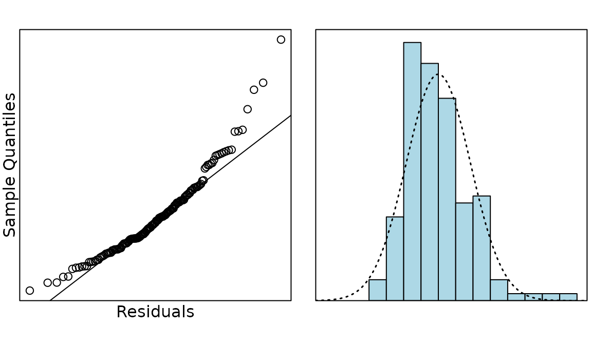
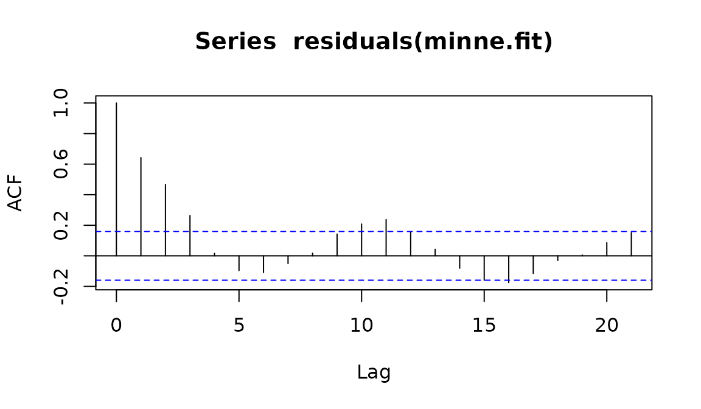
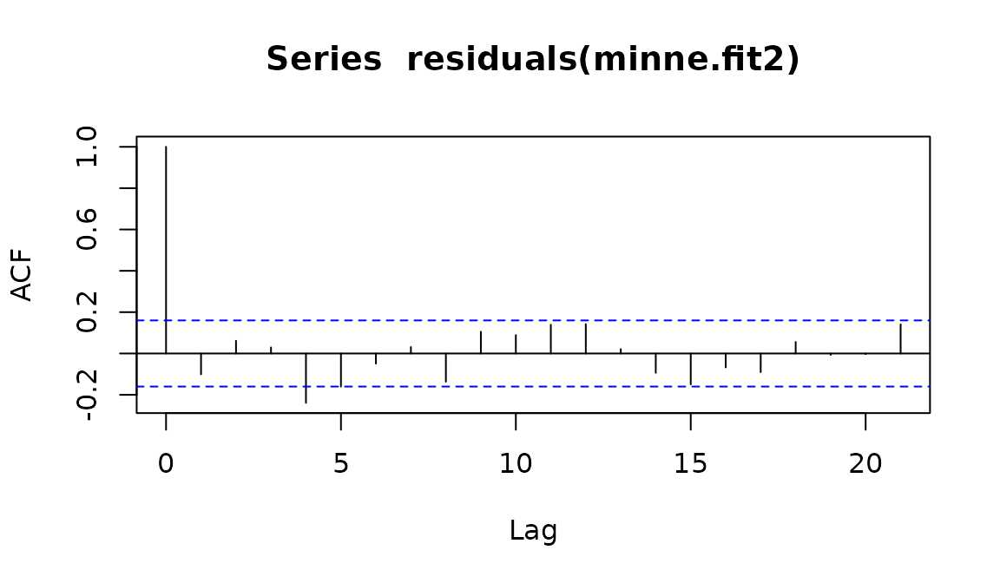
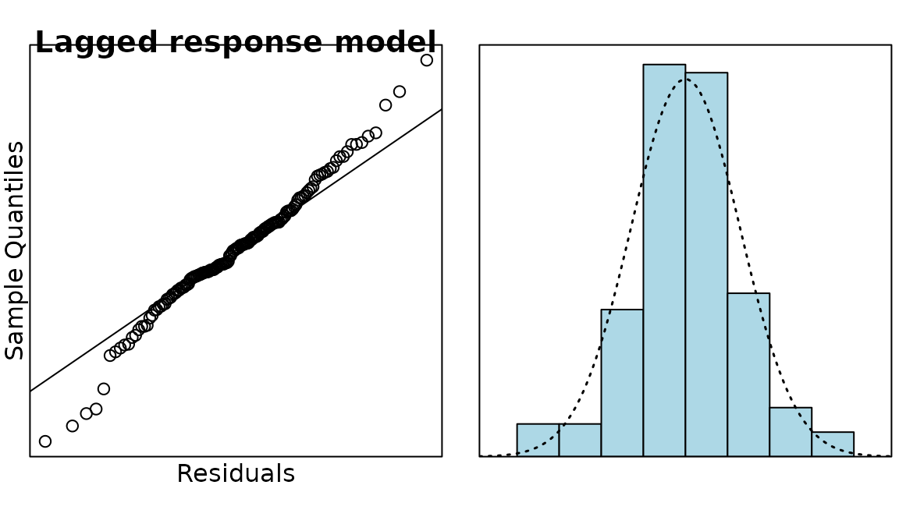

Case Study 17.1: Additional Time Series Case Study A: Public Drunkenness Data
Source:vignettes/articles/CS17_1.Rmd
CS17_1.RmdThe data in this question comes from public records about the number of people arrested for public drunkenness in Minneapolis, Minnesota in the United States. The data was recorded monthly from January 1966 to June 1979. In 1973 Minnesota lowered the legal drinking age to 18, in line with the 26th amendment to the US Constitution (in 1971) which lowered the minimum voting age to 18.
The variables are:
| Variable | Description |
|---|---|
year |
the year the measurement was made, starting at 1966 and ending in 1978 |
month |
the month (1, …, 12) the measurement was made (1 = January, …) |
arrests |
the number of arrests made in a given month in a particular year |
## when you load data make sure it is in the Data directory
minne.df = read.csv("Data/minneapolis.csv")
minne.ts = ts(minne.df$arrests, start = c(1966, 1), frequency = 12)
plot(minne.ts, ylab = "Number of people arrested")
abline(v = c(1966:1979), lty = 2)
minne.df = within(minne.df, {
month = factor(c(rep(month.abb, 12), month.abb[1:7]),
levels = month.abb
);
t = 1:151
change = 1 * (t > 5 * 12)
})## Analysis of Variance Table
##
## Response: arrests
## Df Sum Sq Mean Sq F value Pr(>F)
## change 1 6733595 6733595 714.4931 < 2.2e-16 ***
## month 11 376067 34188 3.6276 0.0001605 ***
## t 1 59433 59433 6.3064 0.0131922 *
## Residuals 137 1291129 9424
## ---
## Signif. codes: 0 '***' 0.001 '**' 0.01 '*' 0.05 '.' 0.1 ' ' 1

minne.fit1 = lm(arrests[-1] ~ change[-1] + month[-1] + arrests[-151]
+ t[-1], data = minne.df)
anova(minne.fit1)## Analysis of Variance Table
##
## Response: arrests[-1]
## Df Sum Sq Mean Sq F value Pr(>F)
## change[-1] 1 6729621 6729621 1461.1695 < 2.2e-16 ***
## month[-1] 11 366252 33296 7.2293 1.331e-09 ***
## arrests[-151] 1 720893 720893 156.5240 < 2.2e-16 ***
## t[-1] 1 2549 2549 0.5535 0.4582
## Residuals 135 621761 4606
## ---
## Signif. codes: 0 '***' 0.001 '**' 0.01 '*' 0.05 '.' 0.1 ' ' 1
minne.fit2 = lm(arrests[-1] ~ change[-1] + month[-1] + arrests[-151],
data = minne.df
)
anova(minne.fit2)## Analysis of Variance Table
##
## Response: arrests[-1]
## Df Sum Sq Mean Sq F value Pr(>F)
## change[-1] 1 6729621 6729621 1465.9819 < 2.2e-16 ***
## month[-1] 11 366252 33296 7.2531 1.194e-09 ***
## arrests[-151] 1 720893 720893 157.0395 < 2.2e-16 ***
## Residuals 136 624311 4591
## ---
## Signif. codes: 0 '***' 0.001 '**' 0.01 '*' 0.05 '.' 0.1 ' ' 1
summary(minne.fit2)##
## Call:
## lm(formula = arrests[-1] ~ change[-1] + month[-1] + arrests[-151],
## data = minne.df)
##
## Residuals:
## Min 1Q Median 3Q Max
## -199.806 -34.076 1.376 33.831 198.492
##
## Coefficients:
## Estimate Std. Error t value Pr(>|t|)
## (Intercept) 164.62960 40.96402 4.019 9.64e-05 ***
## change[-1] -115.48358 27.83543 -4.149 5.86e-05 ***
## month[-1]Feb -4.01749 27.12955 -0.148 0.8825
## month[-1]Mar 64.47022 27.12946 2.376 0.0189 *
## month[-1]Apr 53.13523 27.41105 1.938 0.0546 .
## month[-1]May 30.74339 27.82829 1.105 0.2712
## month[-1]Jun -6.45317 27.91054 -0.231 0.8175
## month[-1]Jul 38.62951 27.52457 1.403 0.1628
## month[-1]Aug 24.63299 28.19479 0.874 0.3838
## month[-1]Sep -19.94512 28.23742 -0.706 0.4812
## month[-1]Oct -2.24227 27.85589 -0.080 0.9360
## month[-1]Nov -49.03804 27.78048 -1.765 0.0798 .
## month[-1]Dec -29.03304 27.69039 -1.048 0.2963
## arrests[-151] 0.73194 0.05841 12.532 < 2e-16 ***
## ---
## Signif. codes: 0 '***' 0.001 '**' 0.01 '*' 0.05 '.' 0.1 ' ' 1
##
## Residual standard error: 67.75 on 136 degrees of freedom
## Multiple R-squared: 0.926, Adjusted R-squared: 0.919
## F-statistic: 131 on 13 and 136 DF, p-value: < 2.2e-16
normcheck(minne.fit2, main = "Lagged response model", xlab = "Residuals")
Solution
The large drop in the trend in 1971-2. This was around when the law was being proposed to lower the drinking age to 18, so shows the effects of the legislation.
Question
Looking at the Seasonal Trend Lowess (STL) plot, do you think there is evidence of seasonality in this time series.
Solution
There is evidence of a seasonal trend, with the number of arrests being higher in summer and lower in winter. However, the seasonal effects are more pronounced in the first part of the time series and are not at all apparent after 1974. (This could be due to the number of underage people being arrested for drinking during summer and spring breaks that were no longer underage after the drinking age was lowered.)
Solution
change is is a binary variable that is 0 for the first 5
years (60 months) and 1 for the rest of the time series. It is being
used to measure the change between the number of arrests before and
after the law was passed.
Solution
The ACF plot of the residuals for minne.fit had many
bars outside the dotted lines, revealing the presence of
autocorrelation, so an autocorrelation term was added to create
minne.fit1. In minne.fit1 the variable
t was found to be non-significant, so it was dropped to
give minne.fit2.
Question
Did time end up being related to the number of arrests? If not, justify your answer. If so, in what ways was it related?
Solution
Time was related to the number of arrests, even though the variable t was dropped from the model. Time was included in the model as:
- change: this measured the effect of the change in time from the first 5 years.
- month: this measured the seasonal effect of time.
-
lagged arrests: this was an autocorrelation term
that used the previous result
to predict the next value, thus taking time into account.